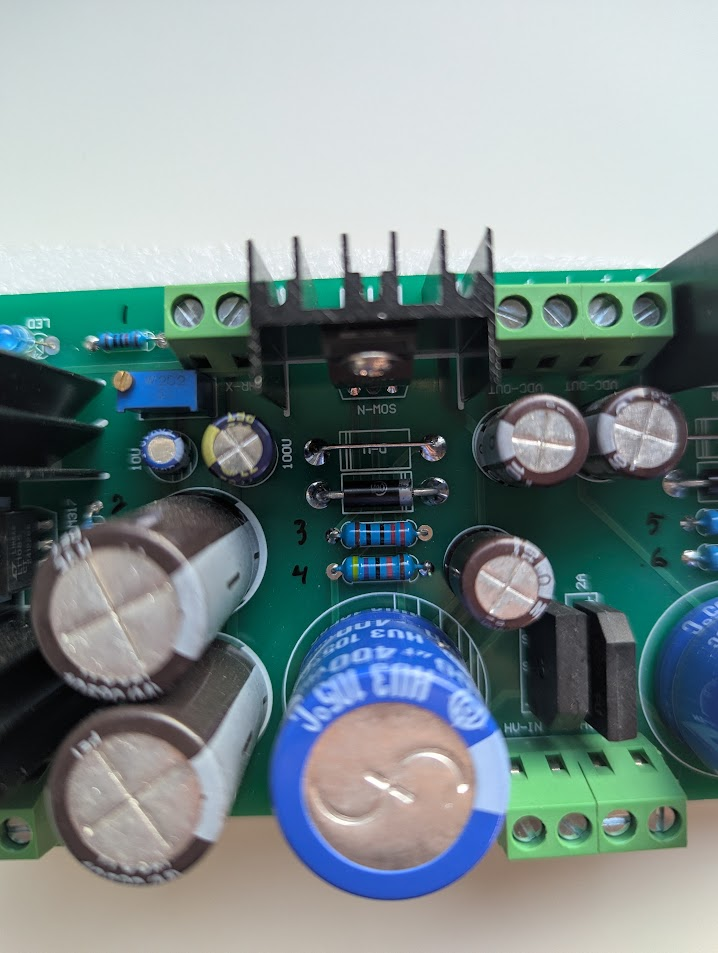
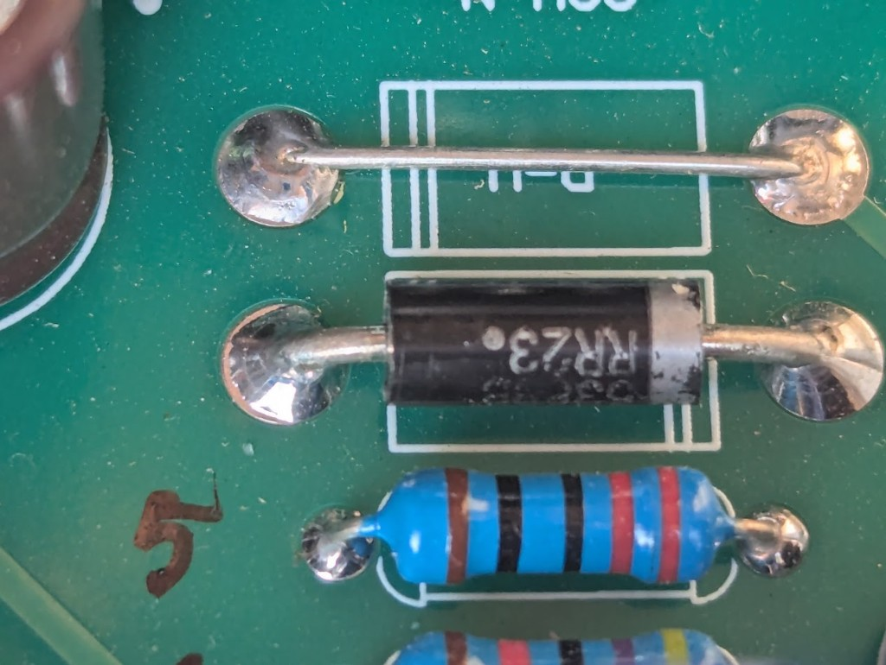
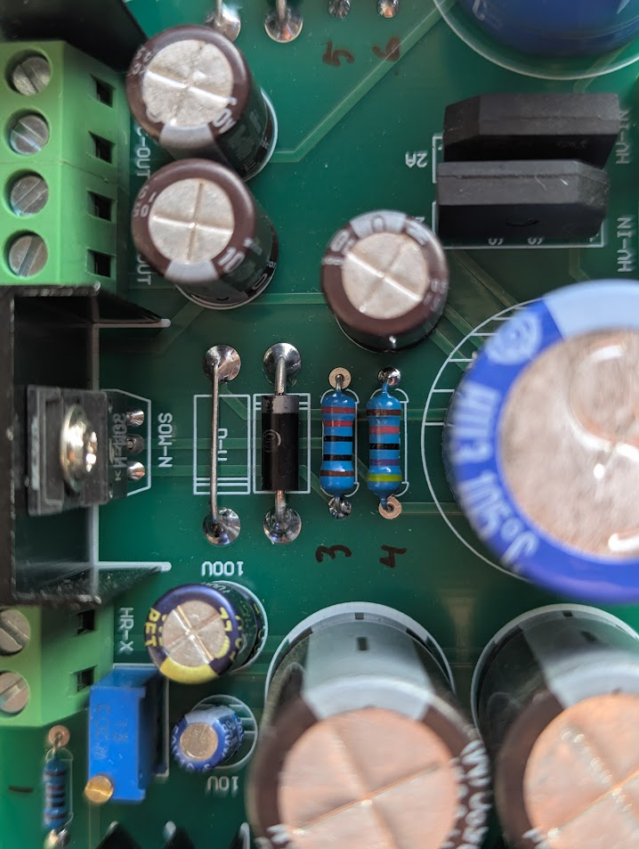
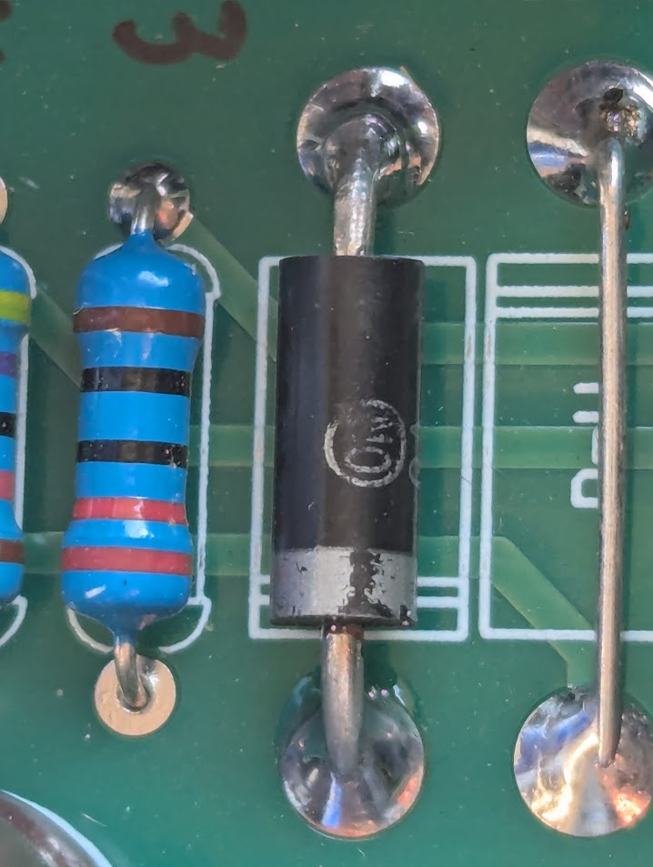

GG-PSU — Component ID
Sources: pcb-photos/psu/; user-confirmed 2026-11-09 (parts + R1–R6).
Confidence: C = user read or part marking · I = logical rail assignment (not continuity-proven) · U = still unknown.
Semiconductors (confirmed)
| Ref | Qty | Part | Role | Conf |
|---|---|---|---|---|
| Q1, Q2 | 2 | 2SK2700 (marking K2700, suffix 8S on your parts) | N-ch HV series pass, heatsinked | C |
| U1 | 1 | LT1085CT (date/lot 241228) | Adjustable filament / LV regulator | C |
| BR1, BR2 | 2 | KBP307 | HV AC → DC (3 A, 1000 V class bridge) | C |
| BR3 | 1 | KBP307 | Filament (or auxiliary) AC → DC | C qty / I role |
| D-V R (D-11) | 1 | wire short | Right channel — closeup | C |
| D-V R (other) | 1 | U | Right channel — second D-V site not in photos yet | U |
| D-V L (one site) | 1 | wire short | Left channel — jumper beside R3/R4 stack | C |
| CR1 | 1 | U (Onsemi-style logo) | Left D-V / ref diode beside jumper — not RR23 print; silk CR1 C | I zener? |
| D1 | 1 | RR23 (?) | Separate from CR1 footprint — may sit below R3 on left I | I |
| D2 | 1 | RR23 | DMM 0.577 V fwd, OL rev; marking RR23 · 35 (batch?) C | C |
| LED1 | 1 | Blue LED | Power / filament indicator | C |

Silkscreen 2A near bridges is a generic label; installed bridges are KBP307 (3 A class) C.
Capacitors (confirmed values)
| Ref | Qty | Value | Est. assignment | Conf |
|---|---|---|---|---|
| C1, C2 | 2 | 100 µF / 400 V | Large blue — HV bulk, one per channel | C / I rail |
| C3–C6 | 4 | 10 µF / 400 V | Smaller brown — HV filter / local (2 per channel I) | C / I rail |
| C7, C8 | 2 | 4700 µF / 25 V | Large brown — LV rectifier reservoir | C / I rail |
| C9 | 1 | 100 µF / 50 V | Dark blue — regulator output or LV filter | C / I rail |
| C10 | 1 | 10 µF / 50 V | Small blue — input/adj bypass near U1 | C |
Value summary (qty)
| Value | Qty | Refs (assigned) |
|---|---|---|
| 100 µF / 400 V | 2 | C1, C2 |
| 10 µF / 400 V | 4 | C3–C6 |
| 4700 µF / 25 V | 2 | C7, C8 |
| 100 µF / 50 V | 1 | C9 |
| 10 µF / 50 V | 1 | C10 |
Note: Photo mis-read 680 µF on one blue cap earlier; your board uses 100 µF / 400 V C.
Potentiometer
| Ref | Qty | Value | Notes | Conf |
|---|---|---|---|---|
| VR1 | 1 | 2 kΩ multi-turn (W202, top line 13) | Filament voltage adjust (U1 ADJ network) | C |
No second trimmer reported on your unit — HV fine-trim may be zener-only or a fixed divider I.
Resistor reference photos (R1–R6)
Ink numbers on the component side match the table below.

HV channel pairs R3–R6: hv-channel-resistors-3-6-closeup.jpg

D-11 jumper + RR23 (D2) + R5 area: closeups/diode-d11-rr23-r5-area.jpg

Left channel — D-V jumper, axial diode, R3/R4: closeups/d-v-left-d1-r3-r4-area.jpg


CR1 body + adjacent jumper (left): closeups/cr1-d-v-left-jumper.jpg


All listed parts: blue 5-band metal film, 1% (brown tolerance) unless noted.
Resistor BOM (R1–R6) — confirmed values
| Ref | Ω | Region (component side) | Role I |
|---|---|---|---|
| R1 | 100 | Top-left, beside LED1 and VR1 | LED current limit |
| R2 | 10 k | Left, below U1 / heatsink, near small caps | U1 bias / divider leg |
| R3 | 220 | Center-left, below diode, above Q1 N-MOS | HV channel A (with R4) |
| R4 | 47 k | Below R3 | HV channel A (with R3) |
| R5 | 220 | Center-right, below diode, above Q2 N-MOS | HV channel B (mirror of A) |
| R6 | 47 k | Below R5 | HV channel B (mirror of A) |
Bands on R3/R5 match 220 Ω (red-red-black-black-brown). R4/R6 match 47 kΩ (yellow-violet-black-red-brown) C.
Value summary (qty)
| Value | Qty | Refs |
|---|---|---|
| 47 kΩ | 2 | R4, R6 |
| 10 kΩ | 1 | R2 |
| 220 Ω | 2 | R3, R5 |
| 100 Ω | 1 | R1 |
Note: Only six fixed resistors are populated on this board (per your count). Any other R/C refs in seller docs may be optional or a different PCB revision.
Diodes (D1, D2) — how to measure
We can measure them on your bench (not from photos alone). Use a power-off, discharged board (bleed the 400 V caps first).
| Step | What to do |
|---|---|
| 1. Read the body | Black axials above R3 / R5. User read RR23 on D2 — re-check for FR207 / 207 with better light. |
| 2. Orientation | Silver band = cathode (K). Matches PCB diode silkscreen on both channels. |
| 3. Diode test (DMM) | Ω/diode mode: red → anode, black → cathode → expect ~0.55–0.75 V (silicon / fast-recovery). Reverse → OL / no conduction. |
| 4. In-circuit caveat | R4/R6 (47 kΩ) and the MOSFET network can fake readings. If forward voltage looks wrong, lift one lead (or measure on a spare part) for a clean test. |
| 5. Record | Note D1 = left channel, D2 = right (above R3/R5). |
Do not confuse with:
- BR1–BR3 (KBP307) — four diodes inside each bridge; identify by package, not axial measure.
- D-V1, D-V2 — 5 W zener positions (HV setpoint). Different part, different test (below).
Identification status
| Ref | DMM (diode mode) | Body marking |
|---|---|---|
| D2 | 0.577 V forward, OL reversed C | RR23 C (user read) |
| D1 | not reported | Assumed RR23 I |
0.577 V forward fits a standard silicon rectifier at DMM current (not Schottky, not zener).
What “RR23” likely is
There is no common catalog part literally named RR23 in this role (that string is often a motorcycle reg/rec SKU, unrelated here). On Chinese PSU kits, similar black DO-15 diodes are usually in the FR207 family:
| Likely equivalent | Spec | Notes |
|---|---|---|
| FR207 / ER207 / HER207 | 2 A, 1000 V, fast recovery | Matches HV 2SK2700 channel; photo once looked like “FR207” |
| 2A07 (e.g. 2A07-T) | 2 A, 1000 V | Same class |
| 1N5623 | 2 A, 1000 V | Older JEDEC name, similar job |
Check the print again: on many parts F and R look alike, and FR207 can be mis-read as RR23 or RR207 (missing digits). If you can see FR207 or 207, treat marking as that.
Replacement: use FR207 (or 1N5623 / 2A07) 2 A · 1000 V — not FR203 (only 200 V), which would be underrated here.
Zeners (D-V) — separate from D1/D2 axial rectifiers
HV setpoint (seller: Vout ≈ Vz1 + Vz2). For 200 V, typical build: one zener in one footprint, wire short in the other.
From your close-ups C
| Location | Installed | Notes |
|---|---|---|
| Right — D-11 | Wire jumper | diode-d11-rr23-r5-area.jpg. RR23 below = D2 rectifier, not the zener site. |
| Left — D-V pair | Jumper + black axial side-by-side | d-v-left-d1-r3-r4-area.jpg. R3/R4 below. |
Seller wiring I: Vout ≈ Vz1 + Vz2 with one site strapped and one holding the zener (200 V class for GG-PRE). This board shows at least two strapped sites (right D-11 + left jumper). The 200 V (or stacked) zener is likely the black axial beside the left jumper and/or a second D-V site on the right not visible in the first right-channel photo.
Close-up of CR1 cr1-d-v-left-jumper.jpg: no RR23 text; Onsemi / Motorola-style circle logo on the body; faint characters to the right of the logo not fully legible in the photo.
Likely role I: 5 W–class voltage reference in the left channel D-V pair (mate to the wire short), not the same marking style as D2 (RR23).
Common kit alternates for ~200 V here: 2CW200, 1N5388B (200 V, 5 W), or stacked lower-voltage zeners per seller D-V silk. Confirm by:
- Full part number under stronger light / loupe.
- DMM diode test forward ~0.6 V (same as any Si diode — does not prove voltage).
- If you have a spare from the kit bag, read its print.
Right channel: still locate the non-jumpered D-V part (mirror of CR1 / D-11 pair).
| Method | Notes |
|---|---|
| Visual | Glass or black 5 W zener with voltage printed (e.g. 2CW200, 200V) |
| DMM | Forward ~0.6 V only; breakdown needs bench test |
BOM freeze (user input complete)
No further photos or markings available. Documented unknowns are closed with inferred rebuild guidance below (not continuity-verified on your board).
Rebuild shopping list (C unless noted)
| Qty | Part | Notes |
|---|---|---|
| 2 | 2SK2700 (K2700) |
HV pass |
| 2 | RR23 marking axial I → spare FR207 class 2 A / 1000 V | D1 assumed = D2 I |
| 1 | LT1085CT | Filament reg |
| 3 | KBP307 | Bridges |
| 2 | 100 µF / 400 V | Blue HV bulk |
| 4 | 10 µF / 400 V | Brown |
| 2 | 4700 µF / 25 V | Brown LV |
| 1 | 100 µF / 50 V | Dark blue |
| 1 | 10 µF / 50 V | Small blue C |
| 1 | 2 kΩ trim W202 | Filament |
| 1 | Blue LED + R1 100 Ω | |
| 1 | R2 10 kΩ | |
| 2× 220 Ω, 2× 47 kΩ | R3–R6 | |
| 2 | 5 W zener stack per HV channel I | See § D-V below |
| 2 | Wire jumpers | D-11 + left D-V short C |
D-V / CR1 — documented limit
| Ref | Status | Rebuild for ±200 V (GG-PRE) I |
|---|---|---|
| CR1 (left) | Installed; logo only C photo | 200 V in CR1 footprint (e.g. 2CW200, 1N5388B, or seller 200 V 5 W part) |
| D-11 (right) | Wire short C | Keep short |
| Left D-V mate | Wire short C | Keep short |
| Right channel ref | Not photographed U | Mirror left: one 200 V zener + one short per seller Vz1+Vz2 rule |
Seller rule I: Vout_HV ≈ Vz(D-V1) + Vz(D-V2). Your build shows shorts in both “second” sites we photographed; active zener(s) are at CR1 (left) and the right-channel twin of CR1 (assume symmetric).
If you ever replace CR1 without a readable part number: use 200 V · 5 W axial zener (or one 200 V + short second pad) and adjust only if measured HV at VDC-OUT differs from ±200 V under load.
Optional (nice for docs, not required to build)
- Per-cap C1–C9 pad map
- D1 duplicate DMM read
- Connector pin order buzz-out